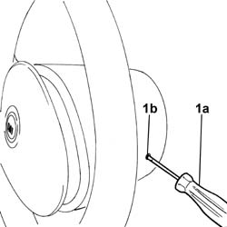
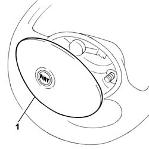
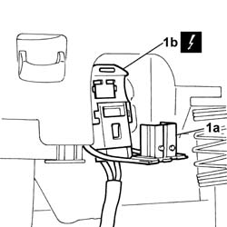
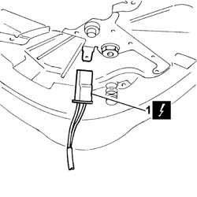

5580C18 air bag module - r+r
- Path
- Procedures > 55 ELECTRICAL EQUIPMENT > 5580 SPECIAL ACCESSORIES > 5580C air bag system > 5580C18 air bag module - r+r
- Kind
- repair procedure (removal / refitting; the operation number is the code)
- Applies to
- all engines; all production periods
- Interactive page
- https://sloeber94.github.io/elrnDB-fDbl/en/#/2584970
Applies to: all engines; all production periods
Applies to: all engines; all production periods
 Removing
Removing
 Refitting
Refitting1. Insert an ordinary screwdriver (1a) or similar in the hole (1b) located on the side of the steering wheel shroud.

Applies to: all engines; all production periods
Push the screwdriver fully in until one side of the module clicks free.
Carry out the same operation on the hole located on the other side of the steering wheel shroud.
1. Move the Air Bag module slightly.

Applies to: all engines; all production periods
1. Open the protective lug (1a) and disconnect the electrical connector (1b).
Name | Connector | |
|---|---|---|
1b | Driver's Air Bag |

Applies to: all engines; all production periods
1. Disconnect the electrical connector.
 | Name | Connector |
|---|---|---|
1 | Data not available yet |

Applies to: all engines; all production periods
Place the Air Bag module in the special cupboard, resting it on a free surface with the bag facing upwards.
Applies to: all engines; all production periods
Refitting
RemovingIf a new Air Bag module is being fitted, attach the appropriate labels.
Detach the removable part of the adhesive label from the new module and put it in a specific file recording the vehicle details (model, registration data, chassis no.) and the serial no. of the old module. This file should be kept for future checks.
A new label is supplied together with the module to be stuck on top of the existing one. However, it should first be perforated to indicate the month and 10 years after the year when the module is fitted (e.g. 2009 will correspond to 1999).
Connect the electrical connections.
| Name | Connector |
|---|---|---|
Data not available yet |
| Name | Connector |
|---|---|---|
- | Driver's Air Bag |
Close the protective lug on the electrical connector for the driver's Air Bag.
Fit the Air Bag module until it clicks into place.
Connect the battery's electrical cables.
Topics linked from this page (2)
Topics that link to this page (27)
- R01 AIRBAG FAILURE WARNING LIGHT ON
- 4110A11 steering wheel - r+r for replacement or check for versions with air bag
- 4110A31 Steering control shaft SUPPORT - R.R. for versions with Air Bag
- 5020A10 heater box - r+r
- 5020A40 heater fan motor selector - r+r
- 5020A50 heater radiator - r+r
- 5020B10 heater control support - r+r
- 5020B35 outdoor/recirculation air intake flap control cable - r r
- 5020B38 air distribution flap control cable - r+r
- 5020B42 air mixer flap control cable - r+r
- 5020B80 heater system wiring bundle - r r or replace
- 5040B22 air conditioning system de-mister thermostat - r+r
- 5040C10 air conditioner box - r+r
- 5040C40 air conditioner fan motor switch - r r
- 5040C50 air conditioner heater radiator - r+r
- 5040C64 a/c evaporator - r+r
- 5040D10 air conditioner control support - r+r
- 5040D35 air intake / recirculation flap cable - r r
- 5040D40 air mixer flap control cable - r + r
- 5505C31 under-facia wiring - r r
- 5505C41 cabin wiring - r r
- 5520A12 ignition switch assembly - r r for versions with air bag
- 5550A12 complete stalk unit - r+r for versions with air bag
- 7040A10 instrument facia trim - r+r
- 7040A48 side bracket of beam supporting instrument and control facia one lh or rh r r
- 7040A97 facia trim support beam - r r
- 7040L17 passenger compartment floor front carpet - r r